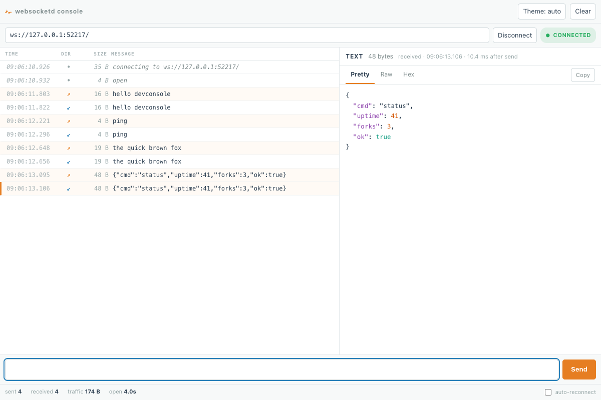

Turn any program into a WebSocket server
websocketd is a single binary that wraps a command-line program and serves it over a WebSocket. Your program reads lines from stdin and writes lines to stdout. No library, no framework, no change to your code.
$ cat count.sh #!/bin/bash for COUNT in 1 2 3 4 5; do echo $COUNT; sleep 1; done $ websocketd --port=8080 ./count.sh

How it works
Your program stays a program
It reads lines from stdin and writes lines to stdout. It does not import anything and it does not know a WebSocket exists.
One process per connection
Every browser that connects gets its own copy of your program. Connections are fully isolated and share nothing.
Any language
Bash, Python, Ruby, Node, PHP, Perl, C, Go. If you can run it from a shell, you can serve it. Examples in every language →
It is CGI’s idea, applied to WebSockets. How the process model works →
See every frame while you build
Start the server with --devconsole and open the root URL in
a browser. Connect, send a frame, and read back what your script wrote to
stdout. You write no client code.
Also in the box
- Serves your static files alongside your program
- Routes different URLs to different programs
- CGI for ordinary HTTP responses
- HTTPS and
wss:// - Origin checking, so only your pages can connect